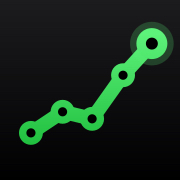

An iPhone-first, installable web app for nutrition, lifting, cardio and weight, with AI calorie estimates from a photo. Designed, built, secured and shipped end to end: 52 pull requests in 3 weeks, in daily use.
Photo or text → Gemini estimates calories and macros, always editable. Calorie ring, macro goals, water, saved foods.
Weekly lift / cardio plan, scroll-wheel set logging, supersets, distance goals, and a #1000club 3-rep-max tracker.
Daily weigh-ins, a chart with a projected goal date, and a one-line AI coaching note.
Food and workout streaks on the phone's local date, so they never break at midnight UTC.
Idea to a deployed, installable app used daily; mobile-first UX.
Relational schema, 15 versioned migrations, triggers and RPCs.
RLS, nonce CSP, server-only secrets, CodeQL, CVE patching.
Benchmark-driven latency work, request hedging, budgets as tests.
Multimodal prompts, schema output, validation, fallbacks, cost limits.
CI/CD, branch protection, Dependabot policy, small reviewed PRs.